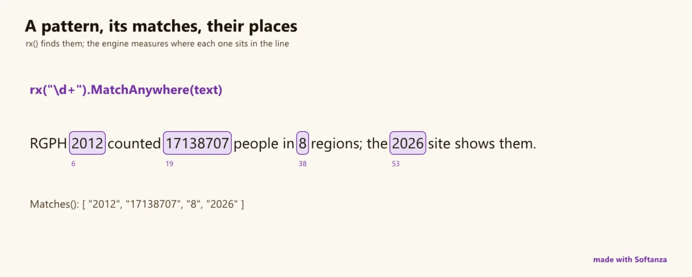

Regex at full PCRE2 power is the entry point; six pattern languages carry it to lists, numbers, time, tables, matrices and graphs. The lanes rate the text engine.
Pattern matching in Softanza is a way to check whether data has a given shape, and it works on every kind of data, not only text. A pattern is a description of what you are looking for. The regular expression, a pattern written in a compact notation to search text, is the first form of it. The same idea then applies to lists, numbers, time, tables, matrices and graphs.
You need it to check that a field is an email address, to find every number in a text, or to test that a list has the right shape. For text, Softanza uses the full PCRE2 library, linked into the engine, with Unicode always on. It supports lookaround (checking what comes before or after a position without including it in the match), backreferences (reusing text that was already matched), recursion and conditionals. RE2 and Rust leave these features out on purpose. Softanza adds clarity about the question being asked. Whether the whole text fits the pattern, whether the pattern occurs anywhere, and where to look (a line, a word or a segment) are each chosen by a separate verb, and not by a flag set somewhere else. A pattern can also be called by name, such as an email or a URL, and can explain itself in plain words.
The idea then goes beyond text. A list is matched by its shape, for example a number followed by a string. A number is matched by a property, for example being prime. In each case you state what you want and the library checks it, so you do not write the loop yourself. Other pattern classes exist: Timex describes the events and durations of a timeline, Tablex states what a table must look like, Matrex states whether a matrix is square, symmetric or diagonal, and Graphex does the same for a graph. The example below checks that the list [7, 'seven'] has the shape number-then-string and that ['seven', 7] does not, then checks that 17 is prime and 18 is not. The output is true, false, true, false.
# a list is matched by its shape: a number, then a string
? Lx("[@N, @S]").Match([ 7, "seven" ])
#--> TRUE
? Lx("[@N, @S]").Match([ "seven", 7 ])
#--> FALSE
# a number is matched by a property
o1 = new stzNumbrex("{@Property(Prime)}")
? o1.Match(17)
#--> TRUE
? o1.Match(18)
#--> FALSE
run in the library on 2026-10-20
When the notation becomes hard to read, a builder class writes it for you. stzRegexMaker builds a pattern from readable steps. A conditional pattern is written like an if/else, and a lookaround like a sentence. stzRegexuter turns matching into computation: it runs code at every match, with the matched value available to that code. The example below builds a pattern from three steps (a word boundary, a group named digits that matches one or more digits, and a second word boundary), then shows the final pattern and its three pieces.
o1 = new stzRegexMaker()
o1 {
AddWordBoundary(:start)
AddCapturingGroup("digits", "\d+")
AddWordBoundary(:end)
}
# the pattern
? o1.Pattern()
#--> \b(?P<digits>\d+)\b
# and its pieces, each of which can be explained
? @@( o1.Fragments() )
#--> [ "\b", "(?P<digits>\d+)", "\b" ]
run in the library on 2026-10-20
The Compass is the document that rates each area against the best tool of its kind. For pattern matching it reports three things. The features are at parity with PCRE2. The API for match semantics is the clearest of its category. The performance is one wiring job away from the level of RE2, because the linear-time matcher, the JIT (a compiler that turns a pattern into machine code) and the ReDoS limits (protection against patterns that take extremely long on some input) are compiled into the binary but are not yet called from the Softanza classes. Until then, use RE2 when you must guarantee that a pattern cannot run for a very long time.

a pattern, its matches and their places in the line. rendered on 2026-10-01 at 04:00 by the site's render script tools/areas.ring, run inside the library at commit 0e72e2e2c · the source(opens in a new tab)
Where it stands
The Softanza Compass's reading: every lane of the area rated against the best of its category, by what the guards prove. Read from the source on 2026-09-16. The Compass's sentences are in English, as it wrote them.
Under the hood it is PCRE2 10.47, statically linked, Unicode always on. On top sits an unusually rich Haro layer — 100+ methods, four fluent builder classes, and a reactive match→code engine — with a clear Match()-anchors / MatchFirst()-searches / partial-as-you-type model. On features it is at PCRE2 parity — lookaround, backreferences, recursion, conditionals, things RE2 and Rust deliberately refuse. Where it trails the modern engines is the safety-and-throughput story: no JIT, no linear-time matcher, and the ReDoS knob isn't even reachable from Haro — although the code for both is already compiled into the binary.
The honesty line on the ratings. The two test runners disagree: _ERR_RUN.txt (current filenames) shows all 53 regex and 51 maker files run crash-free, but the assertion-marker runner _RUN.txt is stale — its filenames predate the current layout — and reports failures clustered in recursive-match info shape and CaptureXT. So the "does not crash" guarantee is firm; the assertion-level one is partly unverifiable until that runner is refreshed. The Zig in-source tests (~57 blocks) are the most trustworthy proof, including three that guard a real subject-lifetime heap bug.
The one-sentence position. Softanza's regex is a feature-complete PCRE2 with the friendliest match-semantics API and builder surface in its class — and a performance story that is one wiring job away from RE2's league, because the linear-time matcher, the JIT and the ReDoS limits are all already in the binary, just not called.
What a crafter does with it, and what stands out
Feature-complete PCRE2: lookaround, backrefs, recursion, conditionals that RE2 and Rust deliberately refuse
The clearest match-semantics API in its class: Match() anchors, MatchFirst() searches, partial as-you-type
Four fluent builder classes with no native peer
A reactive RegexUter match-to-code engine
What is owed
Wire the linear-time DFA matcher (pcre2_dfa_match is already in the binary)
Surface the ReDoS limits on the Haro stzRegex class
Named-group substitution ${name} in replace
Fix the broken Explain fallback (missing stzRegexAnalyzer) and the builder stubs
Rethought from first principles
What Softanza kept from what works, and what it rethought, as the library wrote it down in its design documents and narrations.
The Softanza wayPattern matching is one way of thinking for every kind of data. The regex is its entry point; Softanza carries the same idea to lists, numbers, time, tables, matrices and graphs, and lets you build a pattern in words or call it by its name.
Kept from the best practice
PCRE2 runs every match: proven, Unicode-aware, and written in the regex syntax programmers already know, with Unicode mode always switched on. source(opens in a new tab)
Simple matches are not reinvented: a classic pattern string, named groups and captures work as written; Softanza only adds clearer names around them. source(opens in a new tab)
Rethought
Listex, Matrex, Tablex and Graphex apply one pattern grammar to lists, matrices, tables and graphs, replacing the verbose conditional code structured data usually needs. source(opens in a new tab)
Numbrex and Timex describe a number's properties (prime, perfect, palindrome) or a timeline's events and durations, so you state what you mean, not how to test it. source(opens in a new tab)
stzRegexMaker builds a pattern from readable steps, with conditional (wrxm) and look-around (arxm) makers, because cryptic notation is error-prone and documents nothing. source(opens in a new tab)
Ready-made patterns are called by name — pat(:email), pat(:IPv6) — and can explain themselves with Explain(), because a raw pattern carries no sign of its intent. source(opens in a new tab)
Four scope verbs — Match, MatchLine, MatchWord, MatchSegment — replace the dotall, multiline and word-boundary flags, because a flag set elsewhere hides what the pattern means. source(opens in a new tab)
Match() asks whether the whole text fits the pattern; MatchFirst() asks whether it occurs anywhere — two different questions get two different verbs. source(opens in a new tab)
The Softanza way, run
What Softanza does differently in this area, shown by code taken from its narrations and guards, and run for this page.
A list is matched by its shape, the way a regex matches text: a number then a string, one to three numbers then a string, anything but a number.
Softanza
# a number, then a string
? Lx("[@N, @S]").Match([42, "hello"])
# one to three numbers, then a string
? Lx("[@N1-3, @S]").Match([1, 2, "end"])
# anything but a number
? Lx("[@!N]").Match(["string"])
? Lx("[@!N]").Match([42])
For every lane: what runs in the engine today, the tools it is fair to measure it against, and what is still owed.
01Match, search & anchoringStrong
In the engine
A well-articulated model: Match() anchors the whole content, MatchFirst() searches unanchored, MatchAt(s,n) from a position, and a partial "as-you-type" mode (PARTIAL_HARD/SOFT) for live validation. Scope helpers match within lines / words / segments.
Measured against
PCRE2Python re (match/search)Rust regex
To complete
The clearest match-semantics API of the group, and the partial-match mode is a genuine plus most libraries lack. Nothing structural owed.
02Capture groups — numbered & namedStrong
In the engine
Numbered and named captures ((?<name>) and (?P<name>)), with positions and [start,end] section variants. Haro re-derives names in source order because PCRE2 enumerates them alphabetically — a thoughtful correction.
Measured against
PCRE2Python reRust regex
To complete
Comprehensive. The only related gap is on the replace side (named-group substitution, lane 5), not on capture itself.
03Unicode correctnessStrong
In the engine
PCRE2 compiled with UTF | UCP unconditionally: \p{L}, \p{Lu}, scripts (\p{Greek}, \p{Arabic}), and codepoint-correct \w/\d/. over multibyte UTF-8, with codepoint↔byte offset conversion at the boundary.
Measured against
OnigurumaRust regex (Unicode default)PCRE2
To complete
At parity — Unicode is on by default and cannot be accidentally disabled (the :UseUnicode flag is a no-op because it is already always on).
04Advanced pattern featuresStrong
In the engine
The full PCRE2 set, all proven by engine tests: lookahead / lookbehind, backreferences \1, atomic (?>), possessive ++, non-capturing, recursion (?R), and conditionals (?(?=c)t|e).
Measured against
PCRE2Oniguruma.NET regex
To complete
A category advantage: RE2 and Rust deliberately omit backrefs, lookaround and recursion for their linear-time guarantee. Softanza has them — at the cost of that guarantee (lane 11).
05Replace & substitutionSolid
In the engine
Engine-backed replace with backreferences $1 / ${1} / \1 and literal $$, via global StzRegexReplace and the string face ReplaceRegex.
Measured against
PCRE2 substitutePython re.subRust regex
To complete
Named-group substitution (${name}) is parsed but only numeric names are honored; and there is no Replace method on the stzRegex object itself — only the global and string-face routes.
06Split, find-all & iterationSolid
In the engine
Find-all comes two ways: the string face's single-pass FindAllRegex / extract_all (O(n), skips UTF-8 re-validation), and the stzRegex iteration wrappers (Matches, MatchesZZ). Split via SplitByRegex.
Measured against
Python re.finditer / splitRust find_iterPCRE2
To complete
The stzRegex iteration path makes a per-match engine round-trip (slower than the string-face single pass), and split_get silently caps at 512 pieces (fixed stack arrays).
07Flags & compiled-pattern reuseSolid
In the engine
The standard modifiers — case-insensitive, dot-all, multiline, extended, non-greedy — plus auto-multiline when the pattern contains a newline. A pattern compiles once and recompiles only when flags change; anchor/partial changes are free (match-time options).
Measured against
Python re (compile cache)Rust regexPCRE2
To complete
Several advertised flags are no-ops (:DontCapture, :DisableOptimizations, :UseUnicode), and there is no cross-object compiled-pattern cache.
08Fluent builder DSLSolid
In the engine
A distinctive surface most regex libraries lack: four builders — stzRegexMaker (declarative classes, groups, quantifiers), stzRecursiveRegexMaker, stzConditionalRegexMaker (the W conditional DSL → (?(?=c)t|e)), and stzRegexLookaroundMaker — each emitting a pattern string.
Measured against
VerbalExpressionsXRegExp(no native peer)
To complete
Unfinished in spots: Quantifiers() is an empty #TODO, MatchSameContentAs has a parameter-name bug, and NumberOfSequences() reads an undefined global — latent errors if called.
09Reactive computing (RegexUter)Solid
In the engine
stzRegexuter — a trigger→pattern→code engine that runs regex over text and evaluates per-match code referencing @value, with state tracking, dependency chains and per-position results. Ties into Softanza's broader When/If/Do convention.
Measured against
(no direct peer)awk-style rulesreactive stream ops
To complete
A novel niche surface — powerful, but built on eval() and narrower in use than the core matcher. Rated as the distinctive extra it is.
10Named-pattern catalogue & explanationPartial
In the engine
A 4,842-line catalogue (stzRegexData.ring) of named patterns with explanations, reached by rxp() / pat() — a real asset for "email/url/date" without hand-writing the pattern.
Measured against
regexlib / regex101 explainXRegExp add-ons
To complete
Explain() works only for named patterns — the fallback calls new stzRegexAnalyzer(...), a class that does not exist in the library, so explaining an arbitrary pattern raises rather than explains.
11Throughput — JIT & linear-time matcherPartial
In the engine
One matching path: PCRE2's standard backtracking pcre2_match. Correct, Unicode-aware, and fast on typical patterns.
Measured against
RE2 (linear)Rust regex (linear)PCRE2-JIT
To complete
Both faster paths are compiled into the binary but never called: pcre2_jit_compile (JIT off) and pcre2_dfa_match (the linear, no-backtracking matcher). The code that would answer RE2's whole advantage is present and dark.
12ReDoS safety & limitsPartial
In the engine
The engine has the guards: stz_regex_set_limits(steps, input_len, depth) bounds a catastrophic pattern (an engine test proves (a+)+$ aborts), with a ~10M-step default and a 64 MB input cap.
Measured against
RE2 (ReDoS-immune)Rust regexnode re2
To complete
The limits API is bridged but not surfaced on the Haro stzRegex class — no method calls it — so a caller cannot actually tune the bound against a hostile pattern. Backtracking means ReDoS is bounded, never eliminated.
What is owed, in the order of return
The gaps, ordered by what they bring and not by their size; value is the effect on the library's reach, effort an engineer's reading.
Tier A — foundational (and the code already ships)
Wire the linear-time DFA matcher
pcre2_dfa_match is compiled into the binary and never called. Exposing it as an opt-in matcher gives a no-backtracking, ReDoS-immune path for the patterns that don't need backrefs — answering RE2/Rust's core advantage with code that is already present.
Value · highEffort · medium
Surface the ReDoS limits on the Haro class
stz_regex_set_limits is bridged but unreachable from stzRegex. A method that sets step/depth/input bounds turns an existing safety mechanism into one a caller can actually use against a hostile pattern.
Value · highEffort · low
Tier B — cheap correctness
Named-group substitution in replace
Honor ${name} in replacement strings (it is already parsed, just not expanded for non-numeric names). A small fix that closes an obvious surprise.
Value · mediumEffort · low
Fix the broken explain & builder stubs
Provide the missing stzRegexAnalyzer (or drop the fallback), and close the RegexMaker latent bugs — Quantifiers() TODO, MatchSameContentAs param name, NumberOfSequences undefined global.
Value · mediumEffort · low
Raise the split cap
split_get truncates at 512 pieces through fixed stack arrays — the same class of bug the byte and string engines carry. Grow the buffer or return count-then-drain.
Value · lowEffort · low
Tier C — throughput & reach
Enable PCRE2 JIT
pcre2_jit_compile is in the build source list but never invoked. Wiring it (with the interpreter as fallback) is the standard throughput win for hot patterns.
Value · mediumEffort · medium
Regex over lists, not just strings
The stzRegex TODO names it: apply a pattern across a list of items in one call. A natural fit with the collections plane and a real ergonomics win.
Value · mediumEffort · medium
A cross-object pattern cache
Today each stzRegex compiles its own pattern; a shared LRU cache keyed on pattern+flags would spare repeated compiles across a program, matching Python's implicit cache.
Value · lowEffort · low
The articles of this area (10)
The narrations the library wrote about this area, each run block by block before it was published here.
Simplifying Regular Expressions with the Enhanced stzRegexData Library2025 · feature essayRegular expressions (regex) have become indispensable tools for handling text-based data. They are used across a wide array of domains, from user interface (UI) applications and natural language processing (NLP) to code generation and data parsing.
The Softanza RegexMaker: Making Regex Human-Friendly2025 · feature essayRegular expressions (regex) are powerful but notorious for their cryptic syntax. The Softanza RegexMaker class reimagines regex creation with a declarative, human-readable approach.
Softanza Listex: Bringing Pattern Matching to Lists2025 · paradigm essayPattern matching has revolutionized data validation and manipulation across various programming paradigms. While traditional regex excels at string matching, structured data—especially deeply nested lists—requires a more expressive approach.
stzNumbrex: A Pattern Language for Numbers2025 · paradigm essayValidating numbers can be a chore. Take RGB colors—three integers from 0 to 255. Usually, you'd write lots of code: check the list length, loop through each number, confirm it’s an integer, not negative, and not over 255.
stzTimex: A Pattern Language for Time in Softanza2025 · paradigm essayWorking with time in code is often a tangle of arithmetic and conditions — subtracting timestamps, looping through events, comparing durations, checking overlaps. The logic sprawls, becomes brittle, and hides intent.
stzNumbrex: A Pattern Language for Numbers in Softanza2025 · paradigm essayNumbers aren’t just quantities — they embody structure, logic, and identity. A number like 42 is not merely a scalar: it’s even, composite, divisible by 3 and 7, and composed of digits [4, 2].
stzMatrex: Declarative Pattern Matching for Matrices in Softanza2025 · paradigm essayMatrices are not just collections of numbers — they embody structure, geometry, and mathematical meaning. Recognizing whether a matrix is square, symmetric, diagonal, or identity is often more significant than performing arithmetic operations on it.
stzTablex: Declarative Pattern Matching for Tables in Softanza2025 · feature essayTables are everywhere in programming—from CSV imports to database results, from spreadsheet data to configuration files. But validating table structure, checking data quality, and filtering table collections often requires verbose conditional logic that obs...
The classes of this area (14)
Each class leads to its reference page: its methods, each with an example run.